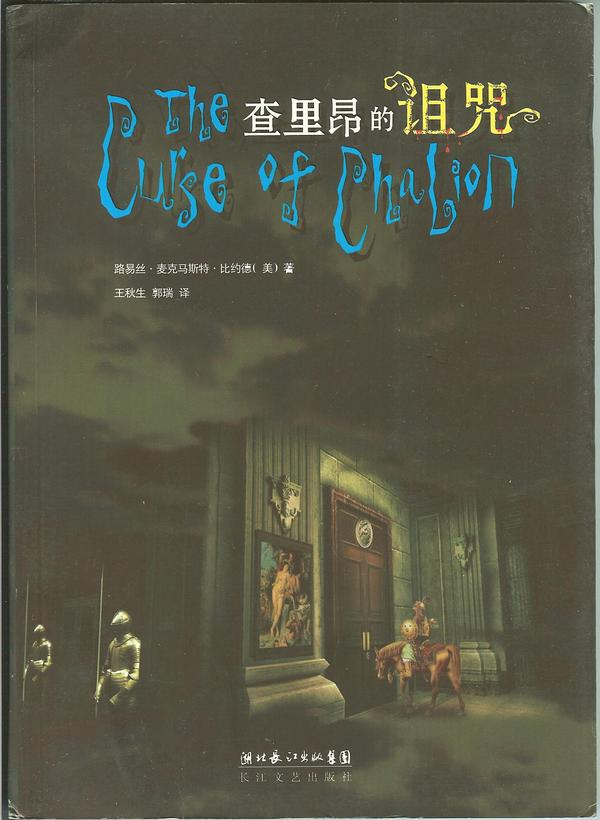

list of old issues
Drei Cafe #2
Bujold / Joyce / Other People
Hi,
Hope you are good! It's been all right here, for a while it was super grim watching "the numbers" get steadily worse in the news, but now "the numbers" are improving and though lockdown's still raging (that is so the wrong word), my mood flips back to fine and I'm whistling making toast again. It's because there's evidence that things will get better! Don't get me wrong, I still drink every day.
I've been running a lot in lockdown, why wouldn't you, we get an hour/day outside so you gotta give your eyeballs as much streetscape as you can! I took Dan's advice and started running the exact same 5k route after work. I thought it'd be boring but it's great, there's no decisions to make, the monotony is freeing. There's this bit where you come around a corner and there's a big school building, all red brick, it's a Catholic school, there's a cross on top. And behind is a great big patch of sky, open unobscured sky. What we have is a long red brick, a cross, and a sky, it's my favourite bit!
I wonder whether I'll remember that bit when I think of lockdown in the future. I lived in Amsterdam in my early twenties, great streetscapes there, I'd get sentimental about them right before I moved away. I remember looking out the tram window, really focusing, thinking "okay, I have to remember this view, this bit of the city, what a great streetscape!". Creasing my brow. Now when I try to recall it, I recall that tram seat pretty well, even the tram window, but the streetscape outside the window I was looking at? I can't remember it at all!
I AM READING A BOOK
A bit before the first Melbourne lockdown I was feeling a bit blue so did an internet search for uplifting fantasy books, for obvious reasons. Louis McMaster Bujold's The Curse of Chalion came up, it sounded good, I cycled over to the City of Melbourne library in the CBD to get it. I'm not a huge fan of that library, it feels like a giant stationary cupboard. Everything is grey and smells musty! I had to ask a lady to reset my password, it took a while to figure out how to use the automatic borrower machine, one of those "what the fuck am I doing here" days. Anyway, I got The Curse Of Chalion.
I often get bored by contemporary fantasy books, a lot of the time I feel like the writer is describing a television set in their head, like, I'm reading someone tell me about a movie they couldn't afford to film, shot-by-shot. I'm not interested in that! But Curse of Chalion (it's from 2001, is that contemporary?) wasn't like that, it was a beauty, I dug it so much I'm still thinking about it now! It's engrossing, like a good fairy-tale, the writing is good too. It starts off with a solider returning to his homeland after escaping from captivity; I was still down, I thought "this was meant to be uplifting, I'm reading about a guy having a terrible time, he's got all these scars, he's poor and sad, this is awful!!" I almost stopped reading! I was in a very tender place.
But then this royal lady gets the solider a job, he has to tutor her feisty royal daughter and hang out with her daughter's hot assistant. But there's a curse! I perked up. Smooth sailing from that point on! Turns out we had to first go through suffering to reach joy at the end??? Life lesson.

There's the cover of the Chinese edition of Curse of Chalion above! The writer, Lois McMaster Bujold, she seems like a stand-up sort. She's got tonnes of books and awards, I read a bunch of interviews with her after I finished Curse, I still remember this one line. She says she imagines her average reader is "a tired nurse after a bad day", who doesn't need someone to preach to her on how to live her life, but just needs someone to hand her a drink. (I just looked it up, it's in context about how she doesn't like fiction trying to be explicitly preachy. I mean who does? I think it's a question that journalists who don't read fiction like to ask writers, do you think fiction should instruct people, should it tell your stupid readers how to think correct thoughts, why don't you think books should come with how-to-vote cards?).
Another thing journalists like to ask authors is whether literature is 'escapist'. I've just started re-reading James Joyce's A Portrait of an Artist as a Young Man, and if 'escapist' you mean 'having an Imaginary Place To Go', I'm totally escaping. The place I'm escaping to is the consciousness of a young boy in late 1800s Ireland. I am absolutely inside it; completely I am inside the young boy's head. I reckon that's the strength of literature, it's the best at shoving you into another consciousness. That's why I got snide about books that read like shot-by-shot movie descriptions. But although I am 'escaping' to 1800s Ireland as I read, I paradoxically feel myself more in the 'current' world, too. I feel part of a world in which 1800s Ireland exists. I'm a guy from history, and the main character of Portrait of an Artist is a guy from the same history. Just at a different time. We swim in different parts of the same river.
Maybe I'll tell you more about Portrait of an Artist later, it's a really good book but you have to read it slowly and confidently.
OTHER PEOPLE
There's a cafe round the corner, I used to go lots in Lockdown One just to have something to do, then stopped because who needs a bloody take-away coffee, what a waste of coin. But now I'm occasionally going again, because the staff are nice and because other locals go too. It's splendid on a sunny cold morning to stand with people who live near you and talk about their dogs and the traffic on the arterial roads.
It's why I like traditional political parties, martial arts clubs, community team sports, big cubicle-farm offices. I like it when people with different aesthetics, beliefs, opinions, backgrounds are brought into a cooperative group by some commonality; a bunch of them might be dickheads but they're your dickheads, "we'll just have to find a way to work together" it's a feel-good movie. I used to think history was mostly about war but now I think it's more about cooperation. That's a pretentious statement, what I'm trying to say is: the lady with her poodle blocking the cafe entrance, the tool in his puffer vest who pushed in front of me, they're in the same river as James Joyce and I. Wow that's even more pretentious!
PERSONAL LIFE
I've been shaving a bit closer these days, 2mm instead of 4mm, it makes my face look thinner.
Thanks!!! If you missed the previous issue, click "view this email in your browser" at the top of this email, there'll be a "Past Issues" button in the header.
Hope you're good bye!
Bye,
Drei
18 Aug 2020
If you like this and have a mate who you reckon might like this, please send them to www.dreicafe.com where I have a sign up sheet for this newsletter! There is also a link to old issues there !!!
© 2020 Drei Cafe